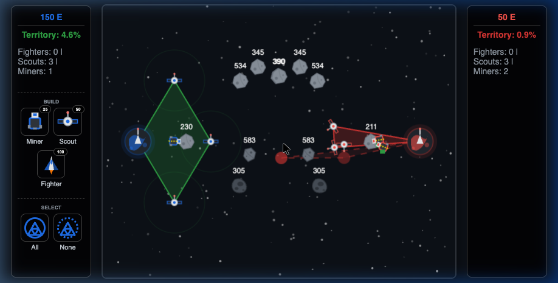

Gameplay in action: Expanding territory and managing units.
Objective
Welcome Commander. Your objective in Neutral Zone is simple: eradicate the enemy or
dominate the sector.
Domination: Expand your territory polygon by moving Scouts to capture 70% of the
map area.
Destruction: Destroy the enemy's Home Planet using Fighters and offensive pushes.
Bankruptcy: Attrite the enemy until they have 0 units and less than 25 Energy
remaining.
The Fleet
You have three types of units at your disposal. Build them using Energy (E) from the
left/right UI panels.
Miner (25 Energy)
Automatically searches for Asteroids located within your territory
hull. Mines resources and returns them to the Home Planet. Highly vulnerable.
Scout (50 Energy)
The cornerstone of your expansion. Drag them across the map to
aggressively expand your territory border. They fire defensively at enemy Fighters.
Fighter (100 Energy)
Your offensive muscle. Drag from a Fighter (or use the "Select All"
tool) to draw a custom flight path. They actively engage enemy units and the enemy Home Planet.

Taking action on the field. You can play as Human vs CPU, or CPU vs CPU to test
strategies!
Mechanics & Stategy
Mastering Neutral Zone involves managing both economy and space.
Territory Physics: Your territory is defined as a convex hull drawn around your
Home Planet and all your living Scouts. Push Scouts outwards to envelop Asteroids so Miners can
reach them safely.
Energy Pipeline: Without Miners, you will quickly run out of Energy. Protect your
Asteroids! If an Asteroid falls outside your territory, the Miners will abort and fly home.
Drawing Paths: Selecting Fighters allows you to draw intricate intercept paths. Use
this to flank the enemy's defensive lines or target vulnerable miners.